-
5 апреля
Регистрация, открытие конференции, лекции и мастер-классы, процесс-группы
-
6 апреля
Лекции и мастер-классы, семинары, практикумы, круглые-столы процесс-группы
-
7 апреля
Лекции и мастер-классы, семинары, практикумы, круглые-столы процесс-группы, закрытие конференции
-
Пятница 5 апреля / 14:00 - 20:006 часов
-
Магистр психологических наук, член Профсовета Республиканского общественного объединения психологов и психотерапевтов «Гештальт Подход», член Европейской Ассоциации Гештальт Терапии (EAGT). Гештальт-терапевт, супервизор, ведущий тренер Московского Гештальт Института, специалист в области травматологии, техник работы со сновидениями, семейной и сексуальной терапии. Автор научных и научно-методических работ в области современной практической, семейной и юридической психологии.Лекция «Травматичный Self в сновидениях: старегии и техники гештальт-терапевта.»Интерактивная лекция о стратегиях работы со сновидениями. Демонстрационная сессия и методологический разбор.
-
Ренос К. Пападопулос, доктор философии, FBPsS., профессор кафедры психосоциальных и психоаналитических исследований, директор Центра травм, убежища и беженцев, а также программ магистратуры и докторантуры по уходу за беженцами в Университете Эссекса. как почетный психолог Тавистокской клиники. Он клинический психолог, юнгианский психоаналитик и системный семейный психотерапевт, как тренер, так и супервизор. В качестве консультанта Организации Объединенных Наций и многих других организаций он работал с беженцами, людьми, подвергшимися пыткам, жертвами торговли людьми и другими людьми, пережившими политическое насилие и катастрофы во многих странах. Его труды опубликованы на 18 языках. Недавно он был удостоен наград Европейской ассоциации семейной терапии за «пожизненный вклад в область семейной терапии и системной практики», Университета Эссекса за «Лучшее международное исследовательское влияние», двух мексиканских фондов «За исключительную работу». с уязвимыми детьми и семьями в Мексике», а Международной ассоциацией юнгианских исследований «К.Г. Юнга 2022 года» за «Пожизненный вклад в область юнгианской науки». Его последние две книги посвящены «Моральному ущербу» и «Непроизвольному смещению»; последний был провозглашен началом новой парадигмы в этой области.Работа со сложностями, возникающими в случае крупных неприятностей: теория и практика по ту сторону травм. (Онлайн-презентация)Концепция «травмы» — это нечто гораздо большее, чем просто психологический термин. Она создало целую парадигму, которая доминировала в нашем представлении о страданиях из-за сложностей и неприятностей в большинстве сфер нашей жизни. В этой презентации я критически рассмотрю ключевые характеристики этой парадигмы и обрисую структуру, которая более осмысленно определяет и концептуализирует диапазон последствий, когда нам приходится столкнуться с неприятностями. Особое внимание будет уделяться предотвращению патологизации человеческих страданий и добавлению конкретики в работе с подобной многогранностью. Центральным элементом этой структуры является «Сетка невзгод», которая будет представлена вместе со всем её креативным разнообразием.
-
Основатель и ректор Университета Современной Психологии Натальи Жуковой Аккредитованный и сертифицированный в России и Европе гештальт-терапевт. Сертификат EAGT (Франция). Самый цитируемый специалист по созависимости в России. Магистр психологических наук МГУ им. Ломоносова. Обучалась в Сколково на программах SKOLKOVO Executive MBA и Executive Coaching & Mentoring SKOLKOVO Опыт работы психологом 15 лет. Регулярные супервизии и личная терапия более 14 лет.Лекция: "Кризисы роста и продвижения терапевта: как быть собой и заниматься любимым делом?"
-
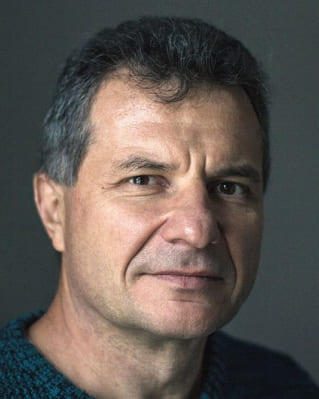
Кандидат психологических наук, доцент, ведущий тренер Республиканского общественного объединения психологов и психотерапевтов «Гештальт Подход» (МГИ). Доцент кафедры психологии Брестского государственного университета имени А.С. Пушкина. Гештальт-терапевт (сертификаты МГИ, EAGT), преподаватель гештальт-терапии, супервизор. Специалист в области клинической психологии и психосоматики, системных семейных расстановок, групповой психотерапии. Действительный член Европейской Ассоциации Гештальт-терапии (EAGT), член правления Белорусской ассоциации психотерапевтов (БАП). Тренер Московского Гештальт Института. Член редколлегии журнала «Псiхалогiя». Автор более 300 научных и научно-методических публикаций в области современной практической психологии и психотерапии, в том числе трех монографий.Лекция «Ресурсы травмы: посттравматический личностный рост».
-
ЭФТ-терапевт (Стандарт ICEEFT, Канада); НМТ-ТЕРАПЕВТ: соавтор и соведущая тренинга «HMT-Moscow: Обними меня крепче»; системный семейный психолог, нарративный консультант, преподаватель Центра Системной Семейной Психологии Инны Хамитовой. Членство в профессиональных сообществах: Член ICEEFT (The International Centre of Excellence in Emotionally Focused Therapy - http://www.iceeft.com ); Опыт преподавания (ЦССТ): Преподаватель программы повышения квалификации 1200 академических часов «ЭФТ»; Авторские тренинги: Работа с агрессивным и уничтожающим поведением в парах; Работа с метафорами в ЭФТ; Работа с изменами в ЭФТ; Тренинг по работе с уязвимостью, обидами и ранами привязанности.Мини-Мастерская:«Переход острого горевания в печаль: мудрость принятия. Опыт работы терапевта в ЭФТ-подходе»Как «заштопать» эмоциональный разрыв с умершим близким человеком. Любой терапевт из практически любого подхода, работая с утратой и травмой, стремится к бережности и к работе с ресурсами такого клиента. Эмоционально-фокусированная терапия, конечно же, не исключение, - но благодаря таким уникальным инструментам подхода как усиление и эмпатические предположения эфт-терапевтам удается не только предложить утешение своему клиету, но и нивелировать ужас и боль разрыва утраты «навсегда». Благодаря уникальной дорожной карте и специальным интервенциям мы приводим клиента из отчаяния в грусть и принятие события, но сохраняя при этом уникальность эмоциональной связи и возможность эмоционального общения. Приглашаю прикоснуться к этим эфт-возможностям. ЧТО БУДЕТ: 1. Дорожная карта разговоров о смерти как о продолжении эмоционального контакта. 2. Работа с чувствами клиента в горе утраты. 3. Нестандартные итоги хорошей работы: эмоциональный контакт с умершим близким как облегчение и грусть как финал прохождения кризиса.
-
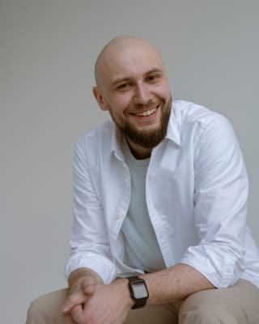
Гештальт- терапевт, супервизор, Ассоциированный тренер МГИЛекция:«Креативная терапия в работе с травмой»Лекция посвящена работе с травмой через Изобразительное искусство. Вы познакомитесь с историей и появлением арт терапии, особенностями работы с клиентами находящимися в острой или хронической форме переживаний сложных проблем или ПТСР и как с этим можно работать через творчество. Целью лекции- рассказать про объемность и глубину этого способа работы, с помощью которого. вы сможете узнать многое о себе и так же сможете помочь клиенту лучше понимать себя в обход Эго- цензуры.
-
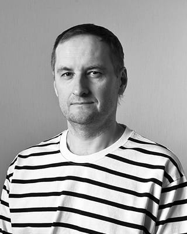
Ведущий тренер МГИ, гештальт-терапевт, супервизор, кандидат психол. наук, телесный терапевт.Лекция «Постравматическая идентичность-реабилитация телесности».Лекция будет посвящена тем глубинным изменениям, которые происходят с человеком в результате травмы. Умирает одна идентичность и образуется новая. Какую роль в этом процессе играет телесность? И как с помощью телесности «примирить» эти идентичности?
-
Дарья Иванова - ассоциированный тренер, супервизор, гештальт-терапевт (Минск). Влана Шерстюкова - гештальт-терапевт (Москва).Мастер-класс «Мой герб. Техника работы с онко-пациентами.»Описание: Работа с онкобольными часто вызывает у психологов много сопротивления и страха. С чего начать? Как двигаться? Какими специальными знаниями и навыками нужно обладать специалисту? На нашем мастер-классе мы предложим вам технику работы с клиентом, которому поставили онкологический диагноз. Вы сможете прикоснуться к этой непростой теме и получить реально рабочий инструмент, на который можно опираться в своей практике.
-
Терапевт, супервизор, тренер. Доцент, Канд.философских наук.Мастерская-лаборатория: "Терапия - процесс превращения боли в…?"Мастерская посвящена исследованию феномена душевной боли и возможностей терапии в превращении боли в иные состояния души. Проживаю свою жизнь, мы нередко переживаем кризисные периоды, порой события в них становятся основой травматичного опыта... Но если вы здесь, интересуетесь собой и этим миром, значит этот опыт дал что-то еще.., что-то ВИТАЛЬНОЕ. Приглашаю вас на свой мастер-класс поисследовать ресурсы пережетых кризисов!
-
Гештальт-терапевт. Супервизор (завершаю обучение). Тренер-стажер. Групповой терапевт. Семейный терапевт. Врач психиатр-психотерапевт. Ведущая групп и образовательных программ.Мастерская: "ЛИНИЯ ЖИЗНИ (ресурсы кризисного события)""Что нас не убивает - делает нас сильнее!" - немного пугающе, но так жизнеутверждающе! Проживаю свою жизнь, мы нередко переживаем кризисные периоды, порой события в них становятся основой травматичного опыта... Но если вы здесь, интересуетесь собой и этим миром, значит этот опыт дал что-то еще.., что-то ВИТАЛЬНОЕ. Приглашаю вас на свой мастер-класс поисследовать ресурсы пережетых кризисов!
-
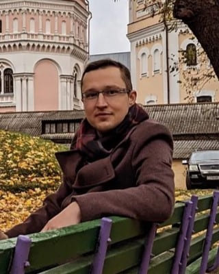
Медицинский психолог, магистр психологических наук, системный семейный терапевт, практикующий специалист по работе с кризисами и травмами.Лекция "Травма измены: феноменология переживания неверности партнерами в близких отношениях"Описание: измена в близких отношениях – ненормативный кризис в жизни пары, который запускает уникальный комплекс переживаний, не похожий ни на одну другую форму психологического кризиса. Это связано с культурной и психологической спецификой романтических и супружеских отношений, которые отличаются от любых других форм человеческого взаимодействия. Данным отношениям характерна взаимная эмоциональная зависимость партнеров, взаимное ожидание собственной исключительности, а также создание уникального интимного межличностного пространства, вход в которое открыт только для двоих. Чуткость психолога к миру субъективных переживаний партнёров, которые столкнулись с травмой измены, раскрывает дополнительные возможности для оказания им эффективной помощи в восстановлении утраченной близости.
-
Юлия Лахвич: кандидат психологических наук, доцент кафедры общей и медицинской психологии Белорусского государственного университета, гештальт-терапевт, системный семейный терапевт, телесный терапевт, специалист в области работы с семьями, супружескими парами, детско-родительскими отношениями. Ведущая авторских курсов для студентов и магистрантов: «Психология семьи», «Семейное консультирование», «Психология родительства и семейных кризисов».Вадим Кецко: гештальт-терапевт, телесный терапевт, специализируется на работе с семейными вопросами, а также с наркозависимыми и ВИЧ-положительными клиентами. Ведущий семинаров, мастер-классов, тренингов. Тренер цигун.Мастер-класс «В плену негативного цикла отношений»Говорят, что конфликты неизбежны в каждой паре. Но главное то, как пары выходят из своих конфликтов. Предлагаем вам на мастер классе поисследовать свои разногласия таким образом, чтобы научиться выходить из конфликта без потери близости в отношениях, с лучшим пониманием себя и партнёра, с большим ощущением глубины и эмоционального контакта.
-
Эксперты: Абдурагимова Мария Пылёв МаксимрРазбор случая: "На игле"Описание случая семьи наркомана и их путь от употребления до выздоровления. С подробным процесс-анализом от экспертов.
-
 Елена Ханецкая (Минск) психолог, гештальт-терапевт, супервизорЕлена Протуро (Бали) психолог, гештальт-терапевт, супервизорМастер-класс: «Кризисы "взросления" гештальт-терапевта»В своем "взрослении" терапевт проходит разные этапы развития. Переход с одной стадии на другую может сопровождаться ощущением кризиса, где терапевт сталкивается с непростыми переживаниями, обнажающими его уязвимость, с тревогой, растерянностью, бессилием, ощущением тупика. На своем мастер-классе мы предлагаем поисследовать смыслы "возрастных" кризисов гештальт-терапевта, обнаружить опоры и найти свой способ перехода на новый этап профессионального становления.
Елена Ханецкая (Минск) психолог, гештальт-терапевт, супервизорЕлена Протуро (Бали) психолог, гештальт-терапевт, супервизорМастер-класс: «Кризисы "взросления" гештальт-терапевта»В своем "взрослении" терапевт проходит разные этапы развития. Переход с одной стадии на другую может сопровождаться ощущением кризиса, где терапевт сталкивается с непростыми переживаниями, обнажающими его уязвимость, с тревогой, растерянностью, бессилием, ощущением тупика. На своем мастер-классе мы предлагаем поисследовать смыслы "возрастных" кризисов гештальт-терапевта, обнаружить опоры и найти свой способ перехода на новый этап профессионального становления.
-
-
Суббота 6 апреля / 10:00 - 18:308 часов 30 минут
-
Аккредитованный гештальт-терапевт, тренер-стажер, групповой и телесный терапевтМастер-класс «Азбука тела: ресурсы на пике»Описание: Тело помнит все. И оно хранит не только воспоминания о травмах, но и о тепле, нежности, восторге, благости, радости, энергии и счастье. Приглашаю вас на мастер-класс, чтобы поисследовать тело как копилку уникальных ресурсов. Узнать, как использовать телесный опыт клиента для помощи в проживании кризисов.
-
Врач-психотерапевт, специалист по работе с кризисами и травмами, репродуктивными запросами, базовый консультант ППТ. Семейный психотерапевт. EMDR - практик. С 2018 года сопровождаю онкопациентов и их близких.Круглый стол «Сопровождение онкопациентов и их близких: трудности возникающие у помогающих практиков и возможности преодоления. Викарная травма»Описание: Приглашаю к искреннему диалогу консультантов, психологов, психотерапевтов, которые имеют интерес в области сопровождения онкопациентов. Вы сможете продвинуться в разрешении волнующих вопросов по теме круглого стола, познакомиться с заинтересованными коллегами и получить поддержку в нашем непростом, но важном деле.
-
 Абдурагимова Мария - ассоциированный тренер, супервизор, гештальт-терапевт (Минск). Дарья Иванова - ассоциированный тренер, супервизор, гештальт-терапевт (Минск).Мастер-класс: "Ко-терапия или брак по расчёту"Описание: Создать ко-терапевтическую пару не менее сложно, чем найти спутника для жизни. Ведь с этим человеком вам придётся плечом к плечу проживать разные моменты. И здесь, как и в браке, важно выбрать "своего" партнёра. Помимо этого есть много разных условий, при которых ваша ко-терапевтическая пара может стать успешным проектом. На нашем МК мы предлагаем вам исследовать свои ресурсы в ко-терапии и научиться обращать внимание на важные вещи, которые помогут вам создать прочный профессиональный "брак".
Абдурагимова Мария - ассоциированный тренер, супервизор, гештальт-терапевт (Минск). Дарья Иванова - ассоциированный тренер, супервизор, гештальт-терапевт (Минск).Мастер-класс: "Ко-терапия или брак по расчёту"Описание: Создать ко-терапевтическую пару не менее сложно, чем найти спутника для жизни. Ведь с этим человеком вам придётся плечом к плечу проживать разные моменты. И здесь, как и в браке, важно выбрать "своего" партнёра. Помимо этого есть много разных условий, при которых ваша ко-терапевтическая пара может стать успешным проектом. На нашем МК мы предлагаем вам исследовать свои ресурсы в ко-терапии и научиться обращать внимание на важные вещи, которые помогут вам создать прочный профессиональный "брак". -
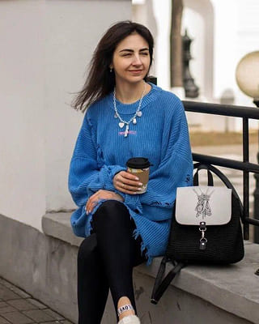
Гештальт-терапевт, супервизор, ассоциированный тренер, ведущая авторских проектов.Лекция-дисскуссия: «Травмированная внутренняя психическая реальность начинающего терапевта: влияние на начало практики, ее развитие и расширение»
-
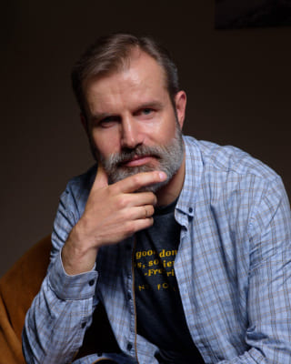
Кандидат психологических наук, доцент, психолог, гештальт-терапевт, супервизор, ассоциированный тренер МГИЛекция «Соматизация и десоматизация травматического опыта».Травма безжалостна. Её проживание осуществляется различными путями. Один из них - формирование соматических симптомов. Решающим моментом в соматизации выступают отношения клиента, в которых симптом используется как аргумент. Этому способствуют защитные механизмы. В процессе соматизации переживания автоматизируются и не осознаются. Но возникает определённость. Жизненные ситуации упрощаются и превращаются в стимулы. Травма захватывает человека и усиливает боль. Человек теряет объёмность видения и, в конечном итоге, власть над собой. В лекции на основе гештальт-подхода и других концепций будет показана логика превращения травматического эпизода в симптом и пути десоматизации, то есть психотерапии в прямом смысле этого слова. Будет обсуждаться тернистый путь содействия клиенту в преодолении внутреннего раскола, становлении его целостности и авторства жизни, которая важна и интересна для него.
-
Магистр психологии Акредитованный гештальт терапевт, супервизор, клинический психолог.Мастер-класс «Назад в будущее».Наш жизненный путь можно сравнить с путешествием. Для кого это путешествие будет увлекательным и ярким, а для кого-то этот путь может стать непростым испытанием. Приглашаю вас на моем мастер-классе взглянуть на свое «путешествие». Попробуем вместе обратить внимание на важнейшие этапы вашего пути и прикоснуться к собственным переживаниям.
-
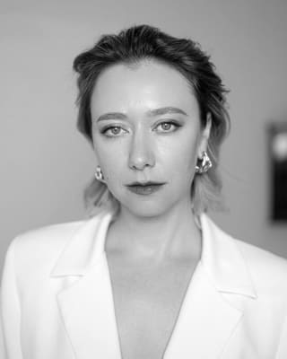
Смысловик, стратег по коммуникации. Опыт в журналистике 10 лет и опыт в инфопредпринимательстве 4 года. Помогаю психологам, коучам и другим специалистам помогающих профессий становиться предпринимателями. Моя миссия: помогать сильным специалистам делать себя востребованнымиЛекция: "Травмы начинающего терапевта: как раскрыть сложные темы в блоге так, чтобы люди хотели покупать ваши услуги. С опорой на тренды социальных сетей 2024"На лекции мы обсудим самые актуальные веяния социальных медиа для экспертов и профессионалов своего дела. С опорой на данные Instagram и GetCourse. Разберем ТОП-8 способов вести свой блог красиво, аутентично, истинно и продающе. Я буду приводить огромное количество примеров из собственного опыта в миллионных запусках психологов. В конце – сделаю разборы ваших ситуаций.
-
Аккредитованный гештальт-терапевтЛекция: «Влияние проживания подросткового кризиса на стиль работы терапевта и запросы клиентов»Обычно, первые затруднения или даже симптомы клиентов появляются в подростковом возрасте. Я расскажу, как использовать знания о подростковом возрасте клиента, чтобы эффективнее выстраивать терапевтическую работу с уже взрослым человеком и понимать причины многих запросов и трудностей клиентов и терапевтов.
-
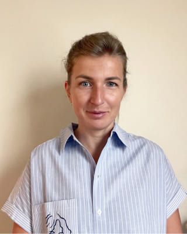
Кризисный психолог, групповой и семейный терапевт.Лекция «Сепарационная тревога. Горечь утраты и проживание одиночества в присутствии терапевта»Описание: Механизм сепарационной тревоги помогает предохранять отношения от их разрушения, обозначая важность ощущения принадлежности к кому-то и вовлеченности в эмоциональную связь. Но есть и обратный эффект: избыточность сепарационной тревоги делает практически невозможным переживание одиночества. Способность к сепарации играет большую роль не только в приобретении автономии ребенка, но и в построении взрослых отношений, особенно в переживании их завершения. Непризнание утраты препятствует осуществлению сепарации. Принятие сепарации — это открытый путь к новому, к другим местам, другим связям, другой любви. Терапевтическое пространство помогает пережить ощущение покинутости и глобальной утраты, потому что «способность к одиночеству основана на опыте проживания одиночества в присутствии матери, и без подобного опыта присутствия другого индивид так и не сможет приобрести эту способность»
-
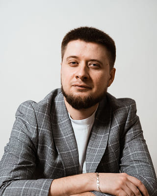
Врач-психиатр-нарколог, гештальт-терапевт, ведущий терапевтических и обучающий групп.Круглый-стол: "Этические вопросы и психодинамические аспекты предъявления психотерапевта в социальных сетях"
-
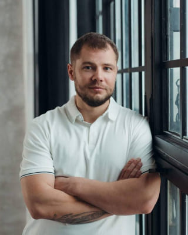
Врач-психиатр-нарколог, канд. мед. наук, гештальт-терапевт, супервизор, преподаватель кафедры психиатрии и наркологии БелМАПО.Лекция: «Маниакальная защита»Доклад будет состоять из двух частей. Лекция по теме, где рассмотрим разновидность защитного поведения, обнаруживаемого у тех, кто защищает себя от тревоги, вины и депрессии - маниакальную защиту, как бегство во внешнюю реальность от внутренней реальности (под запись). И разбор клинического случая (без записи).
-
Мартынюк Марта, аккредитованный гештальт-терапевт, групповой терапевт, специалист по работе с зависимым поведением и нарциссической травмой, семейный консультант, участница 3 ступени, Минск Козлюк Андрей, сертифицированный гештальт-терапевт, ведущий групп и тренингов, специалист по работе с зависимыми, участник 3 ступени, БрестМастер-класс: «Трудный клиент: кто он и что с ним делать? »Почему с некоторыми клиентами работать сложнее, чем с другими, и как это связано с травмирующими опытом терапевта? Как обходиться со своими трудностями - отказываться от работы или пробовать преодолевать их? И если выбирать продолжать работу, какие искать опоры? На мастер-классе поисследуем ответы на эти вопросы. Будет полезно ведущим и начинающим практику терапевтам
-
Гештальт-терапевт, супервизор, ассоциированный тренерЛекция:«Феномен сексуального насилия. Специфика работы с жертвами сексуального насилия» »Сексуальное насилие - чрезвычайно травмирующий опыт для любого человека. Это тема, с которой редко предъявляются клиенты на первой сессии. Работа с насилием требует установления полного доверия в клиент-терапевтических отношениях. И зачастую клиенты могут говорить на более поздних этапах терапии. В своей лекции я расскажу о правилах работы с этой непростой темой, дам практические рекомендации для терапевтов.
-
 Котова Анна: Частная практика Лондон Психотерапевт по транзактному анализу с опытом работы с травмой более 7 лет. Ирит Бакалейник: Частная практика Британия/Израиль. Психотерапевт по транзактному анализу со специализацией в области работы с травмой с опытом работы 8 лет.Круглый стол: «Международный опыт работы с травматическим стрессом»Круглый стол будет посвящен работе со сложным травматическим опытом, полученным в результате физического и сексуального насилия над детьми и взрослыми (child sexual abuse; PTSD, domestic violence , secondary trauma, work related trauma) Психологи из Лондона и Израиля расскажут как выстроена система психологической помощи в их стране, на что они опираются в частной практике, как оказывают психологическую помощь. Круглый стол будет проходить на русском языке.
Котова Анна: Частная практика Лондон Психотерапевт по транзактному анализу с опытом работы с травмой более 7 лет. Ирит Бакалейник: Частная практика Британия/Израиль. Психотерапевт по транзактному анализу со специализацией в области работы с травмой с опытом работы 8 лет.Круглый стол: «Международный опыт работы с травматическим стрессом»Круглый стол будет посвящен работе со сложным травматическим опытом, полученным в результате физического и сексуального насилия над детьми и взрослыми (child sexual abuse; PTSD, domestic violence , secondary trauma, work related trauma) Психологи из Лондона и Израиля расскажут как выстроена система психологической помощи в их стране, на что они опираются в частной практике, как оказывают психологическую помощь. Круглый стол будет проходить на русском языке. -
Иван Протуро практикующий психолог, коуч, гештальт-терапевт, участник 3 ступени, к.ф.м.н., ведущий авторских программ и терапевтических групп.Елена Протуро практикующий психолог, коуч, гештальт-терапевт, участница 3 ступени, ведущая авторских программ и терапевтических групп./div>Мастер-класс: «Финансовые травмы»О таких травмах редко говорят, но это не значит, что их не существует, и их последствия не отягощают жизнь своего носителя. На мастер-классе будем легализовывать существование финансовых травм, дифференцировать, исследовать воздействие прошлого на настоящее, замечать, какие иррациональные решения мы вдруг принимаем при всей доступности финансовой грамотности и как можно по-другому.
Воскресенье 7 апреля / 10:00 - 18:308 часов 30 минут-
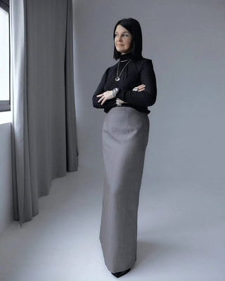
Ведущий тренер МГИ, психолог, сексолог, автор и ведущая обучающих программ по сексологии, терапии пар, психологии аддикции и психологии женского здоровья, преподаватель РНСО, руководитель института психосексуального развития человека " Поток"Мастер-класс " Решение, принятое в травме"На мастерской я расскажу и покажу, как работать с дезадаптивным сценарием, который закладывает при шоковой травматизации.
-
 Психиатр, психотерапевт, к.м.Н, руководитель секции гештальт-терапии, сопредседатель Совета Супервизоров Российской Психотерапевтической Ассоциации, член Санкт Петербургского психологического общества, преподаватель УМЦ им. Н. П. Бехтеревой, ВЕГИ, МИГАС, тренер ОППГП.Лекция: «Гештальт подход в терапии навязчивых состояний»
Психиатр, психотерапевт, к.м.Н, руководитель секции гештальт-терапии, сопредседатель Совета Супервизоров Российской Психотерапевтической Ассоциации, член Санкт Петербургского психологического общества, преподаватель УМЦ им. Н. П. Бехтеревой, ВЕГИ, МИГАС, тренер ОППГП.Лекция: «Гештальт подход в терапии навязчивых состояний» -
 Ассоциированный тренер, системный семейный терапевт, сексолог, арт-терапевт.Мастер-класс: "Путешествие героя: туда и обратно" (сказкотерапия в работе с кризисными состояниями)История путешествия героя - о том, как каждый из нас однажды отправляется в Путь, чтобы совершить свой Подвиг, встретиться с Демонами, обрести друзей и Наставников, "спеть свою песню", ради которой он приходил в эту жизнь... - самая старая сказка на свете. Не потому, что она говорит нам о том, что Ночь и Драконы существуют, а потому, что говорит о том, что Драконов можно победить, а Ночь не вечна... Предлагаю в рамках мастерской написать и исследовать историю своего путешествия и найти ресурсы, которые будут поддерживать вас в Пути. А также обсудить возможности и достоинства самого древнего и одного из самых молодых направлений психотерапии... Необходимые материалы: бумага, ручка, цветные карандаши
Ассоциированный тренер, системный семейный терапевт, сексолог, арт-терапевт.Мастер-класс: "Путешествие героя: туда и обратно" (сказкотерапия в работе с кризисными состояниями)История путешествия героя - о том, как каждый из нас однажды отправляется в Путь, чтобы совершить свой Подвиг, встретиться с Демонами, обрести друзей и Наставников, "спеть свою песню", ради которой он приходил в эту жизнь... - самая старая сказка на свете. Не потому, что она говорит нам о том, что Ночь и Драконы существуют, а потому, что говорит о том, что Драконов можно победить, а Ночь не вечна... Предлагаю в рамках мастерской написать и исследовать историю своего путешествия и найти ресурсы, которые будут поддерживать вас в Пути. А также обсудить возможности и достоинства самого древнего и одного из самых молодых направлений психотерапии... Необходимые материалы: бумага, ручка, цветные карандаши -
Медицинский психолог, магистр психологических наук, системный семейный терапевт, практикующий специалист по работе с кризисами и травмами.Мастер-класс «Психологические опоры в ситуации измены: выявление, формирование и укрепление.»Описание: рассмотрим различные приемы отыскания психологических опор, необходимых для восстановления партнерами утраченной в результате измены близости.
-
 Практикующий психолог, участник программы 2 ступени.Мастер-класс "Травма. Искажение времени."Краеугольный камень гештальт-практики – осознавание себя в «здесь и сейчас». В фокусе внимания мастер-класса - исследование восприятия времени. Что это такое – быть «в моменте, быть «в сейчас»? Каждый человек воспринимает течение времени уникально и неповторимо. Под влиянием стрессовых событий ощущение времени может искажаться - растягиваться, замедляться, останавливаться. На мастер-классе поговорим о том, что происходит с восприятием времени в травме, а также «заглянем» внутрь своего часового механизма и исследуем персональную концепцию времени с помощью арт-терапии. Упражнение позволит выявить особенности ваших внутренних часов, осознать взаимосвязь хода собственной жизни с реальным временем.
Практикующий психолог, участник программы 2 ступени.Мастер-класс "Травма. Искажение времени."Краеугольный камень гештальт-практики – осознавание себя в «здесь и сейчас». В фокусе внимания мастер-класса - исследование восприятия времени. Что это такое – быть «в моменте, быть «в сейчас»? Каждый человек воспринимает течение времени уникально и неповторимо. Под влиянием стрессовых событий ощущение времени может искажаться - растягиваться, замедляться, останавливаться. На мастер-классе поговорим о том, что происходит с восприятием времени в травме, а также «заглянем» внутрь своего часового механизма и исследуем персональную концепцию времени с помощью арт-терапии. Упражнение позволит выявить особенности ваших внутренних часов, осознать взаимосвязь хода собственной жизни с реальным временем. -
Гонта Анастасия - Тренер РОООППГП, супервизор, гештальт терапевт. Кандидат психологических наук.Лекция: "Воронка и травмы и воронка исцеления: путь к целостности."Описание: В практике терапии травмы нередко используются две психотерапевтические метафоры: «воронка травмы» и «воронка исцеления». Воронка травмы представляет собой результат остановки переживания, вызванного травмой. Энергия, связанная с травматическим переживанием, становится воронкой или вихрем, затягивающим человека в события «там и тогда», как если бы они происходили «здесь и сейчас». Воронка исцеления - это противоположность воронке травмы. Построение исцеляющей воронки происходит через возобновление переживания на границе контакта и позволяет получить доступ к «заблокированной» энергии в травматической воронке. Это помогает создать ресурсы, необходимые для проживания «законсервированных» импульсов. В лекции пойдет речь о работе гештальттерапевта с травмой через построение связи между двумя «воронками» для восстановления процесса переживания и проживания травматического события и его последствий.
-
Доктор психологии (PhD), руководитель Балтийского Института Психотерапии, семейный психолог, гештальт-терапевт, супервизор.Лекция: "Драматический треугольник: работа с триангуляцией в семейной терапии"
-
Гештальт-терапевт, семейный психолог, специалист по работе с кризисами и травмамиМастер-класс: "Выгорание как следствие травматического опыта"Описание - Часто выгорание связывают с профессиональной, семейной и социальной перегрузкой. На практическом мастер-классе мы посмотрим на эту взаимосвязь с точки зрения модели расщепления целостности человеческой психики. А также на то, как наши ресурсы и энергия уходят на поддержание стратегий выживания. Вам понадобятся цветные карандаши и 3 листа А4
-
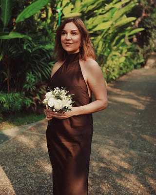
Гештальт-терапевт, супервизор, тренер МГИ. Ведущая обучающих, супервизорских, терапевтических групп и специализаций. Член Общества Практикующих Психологов «Гештальт Подход» (ОПП ГП). Специализации: работа с сексуальными и семейными проблемами, кризисы и травмы, психотерапия зависимого поведения.Мастерская: «Таинственный мир травмы: техника безопасности и ресурсы травмы»Кризисы - это неизбежная часть нашей жизни. Проживая кризис, мы становимся более целостными, обретаем новые знания о себе и о мире, которые помогают нам пройти следующий кризис с наименьшими потерями. Но иногда случается так, что проживание кризиса в какой-то момент останавливается, замирает и человек не интегрирует новое знание о себе, а расщепляется на кучу маленьких кусочков, которые, содержат непереваренный и непростой эмоциональный опыт. Именно такое развитие событий называется травмой. Работа с кризисами и травмами - это не только столкновение с болью, но и понимание мудрости человеческого тела, осознание очень мощных и глубоких сил, хранящихся в человеке. Важная часть работы с травматическим опытом – это постоянное возвращение к ресурсам, к тому, что помогло человеку выжить и продолжает помогать жить сейчас. Помогая нашим клиентам переработать травматический опыт, мы неизбежно сталкиваемся с необходимостью опоры на ресурсы клиента и соблюдение техники безопасности. Мир травмы клиента часто пугает, останавливает проявление искреннего интереса терапевта к его устройству. Часто терапевту не хватает знаний, умений, ресурсов для работы с этой темой. Но если у терапевта появится необходимое снаряжение, то погружение в мир травмы может оказаться очень увлекательным и способствующим исцелению, которое позволит клиенту проживать свою жизнь в полной мере.
-
Магистр психологических наук, семейный психолог, сексологМастер-класс: «Раняя травматизация: перепрограммирование сексуального влечения». Минск, Беларусь.Проблемы, возникающие во взрослых отношениях, часто связаны с детским опытом, который мы не помним или не считаем важным. Исследование сексуального влечения как важной части цикла сексуального реагирования позволяет осознать и перестроить наш опыт парных отношений. Мы обсудим то, как ранние проблемы могут мешать взрослым отношениям, и сделаем практику по "перепрограммированию" нашего влечения.
-
Марина Варас Шнак (Чили) - директор Чилийского гештальт-института, дочь Адрианы Шнак (автора метода), преподаватель, клинический психолог, гештальт-терапевт, и аккредитованный супервизор.Антонио Мартинес Рибес (Испания) - директор Центра гештальт-терапии в Сантьяго, преподаватель, клинический психолог, гештальт-терапевт и аккредитованный супервизор.Лекция: "Гештальт-терапевтический подход к работе с болезнями и телесными симптомами "Описание: Подход разработан Адрианой Шнак - чилийским психиатром и основателем Чилийского Гештальт Института в Сантьяго. Активно используется в испаноязычных странах, и сейчас впервые становится доступным и для выходцев с постсоветского пространства. Подход основан на убеждении, что тело и разум - это единое целое, поэтому заболевания "соматического" характера имеют свои психологические или личностные аспекты. Уникальный метод "диалога с органами" позволяет распознать возможное "существенное послание", которое присутствует в любом из наших заболеваний и, в этом смысле, позволяет максимально быстро "встретиться" с теми аспектами нашей личности, которые нами вытеснятся, отрицаются или имеют возможность проявиться только через тело.
-
Психоаналитический психотерапевт, сексолог, кандидат психологических наук. Кандидат International Federation of Psychoanalytic Societes, член Alcohol Policy Network in Europe, член International Society of Substance Use Prevention.Лекция: «Контроверсивные позиции в теме травм.»
-
Врач психиатр-нарколог, психолог, аккредитований Гештальт-терапевт, КПТ-ориентированный терапевт.Мастер-класс: «Тревога, голод, агрессия и суицид»Расскажу и покажу на практике методы работы с тревожно- фобическими расстройствами, как отличить патологическую тревогу- как главный фактор формирования тревожных расстройств, разберем каким образом строить работу в случае тяжелого течения ТФР, наличие суицидальных тенденций. Рассмотрим клинический случай генерализованного тревожного расстройства. Вопросы, включенность, обратные связи приветствуются.
-
Гештальт-терапевт, магистр психологических наук, специалист по работе с кризисами и травмамиМастер-класс: «Исцеление травмы развития на границе контакта с терапевтом»Описание: Каждый этап развития ребенка связан с удовлетворением важных жизненных потребностей, на которые человек будет опираться в дальнейшем. Если по каким-то причинам удовлетворение этих потребностей у ребенка блокируется, происходит травма развития. Однако даже спустя много лет психика будет снова и снова пытаться воссоздать историю травматизации и разрешить ее, осознать и удовлетворить важную потребность, в том числе рядом с терапевтом. Поэтому на мастер классе поговорим о том, как, когда и для чего использовать стратегию работы на границе контакта, чтобы опыт терапии стал целительным для клиента, пережившего травму развитию в детстве. Поисследуем ваши ресурсы и расширим арсенал возможностей в данной теме.
-
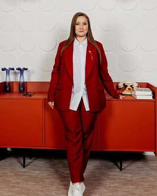
Аккредитованный гештальт-терапевт, магистр психологических наук, маркетолог, руководитель онлайн-проектов для психологов.Мастер-класс: «Психотерапия как бизнес без травмы - с любовью»Для тех, кто хочет не только работать терапевтом, но и зарабатывать на этом достойные деньги без выгорания. Большинство гештальт-терапевтов переходят в профессию из других сфер. Как сделать этот переход наименее травматичным, пережить трансформацию старой идентичности в новую с поддержкой и опорами - поговорим на мастер-классе. Для начинающих будут поддерживающими темы: - Как набрать практику. Простые и сложные способы в самом начале пути; -Как выбрать нишу (специализацию) и почему это важно; - Когда НЕ нужен Instagram. Когда практика набрана, для практикующих терапевтов: - Как создать систему, работающую автономно и перестать быть привязанным к клиентам/ группам физически и финансово. - Пошаговый план создания оффлайн и онлайн-продуктов с учетом пресыщенности рынка.
-
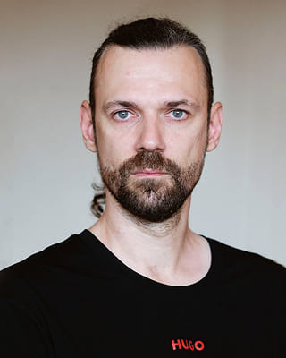 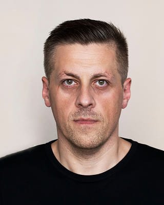Юрий Богуш, Минск Клинический психолог психиатрического отделения, специализирующегося на лечении пациентов с РПП, гештальт-терапевт обучается на 3-й ступениОлег Русак, Минск Врач-психотерапевт отделения, специализирующегося на лечении пациентов с РПП, системный семейный терапевт обучается на 3-й ступениКруглый-стол: "Особенности кризисных вмешательств на стационарном этапе лечения расстройств пищевого поведения"Описание: На круглом столе будут рассмотрены следующие вопросы: -диагностика РПП -психологический профиль личности пациентов с РПП - семья, как фактор риска развития РПП у детей, особенности семейной динамики и работа с семьей - методы гештальт-терапии при работе с РПП Так же будет рассмотрен такой важный вопрос, как необходимость госпитализации пациентов с РПП
-
Татьяна Цоир: - Предприниматель и лицензированный специалист по финансам. Проживаю уже 20 лет в США. Имею степень МБА, образование психолога с МБА, аккредитацию коуча ICF. Автор книги "Dream Bold, Start Smart" и ее перевода на русский "Мечтай Смело, Действуй Разумно", профессиональный спикер и участних 3х TEDx выступлений. За своей спиной имею 20 лет работы с бизнесами от 100 тыс долл выручки до 35 миллионов долл США. Обучаюсь на 2 ступени Гештальт-терапии и работаю с вопросами личных травм в бизнесе и бизнес-решений.Игорь Смирнов: - Психолог, работаю в гештальт подходе. Не только психолог, но предприниматель, бизнес консультант, опыт в открытии и управлении бизнесом в 3-х странах. Соучредитель пространства для работы психотерапевтов Godna. (https://godnaeu.tilda.ws/) Один из основателей фундации PsyConnect- сообщество психологов переехавших в Европу (https://psyconnect.eu/)Мастер-класс: "Травма утраты бизнеса: как быть в контакте с партнерами, сотрудниками и другими, и почему любой бизнес это про отношения."На нашем МК мы: - Разберем бизнес отношения через цикл контакта. - Рассмотрим специфику механизмов прерывания контакта в бизнес отношениях. - Обсудим особенности работы с high performance people. Все пункты будут поддержаны конкретными примерами из бизнеса (клиентские случаи).
-
Татьяна Гайчук Гештальт-терапевт СупервизорЮлия Готварт Гештальт-терапевт Кризисный психолог. Автор МАК - картМастерская: "Кислород в отношениях. Работа с последствиями психологического насилия"Описание: Эмоциональное насилие не оставляет синяков. Но невидимые раны навсегда остаются в душе и впоследствии влияют на все сферы жизни. Могут приводить к травмам и развитию посттравматического стрессового расстройства (ПТСР). На мастер-классе мы поговорим: - о том, что такое психологическое насилие и его видах - о том, как идентифицировать травмирующие обстоятельства на линии жизни клиента - о травмах, возникающих в результате психологического насилия и их последствиях - о восстановлении и ресурсообеспечении. Приглашаем укрепить свои профессиональные компетенции в работе с клиентами, имеющими в анамнезе опыт психологического насилия.
-